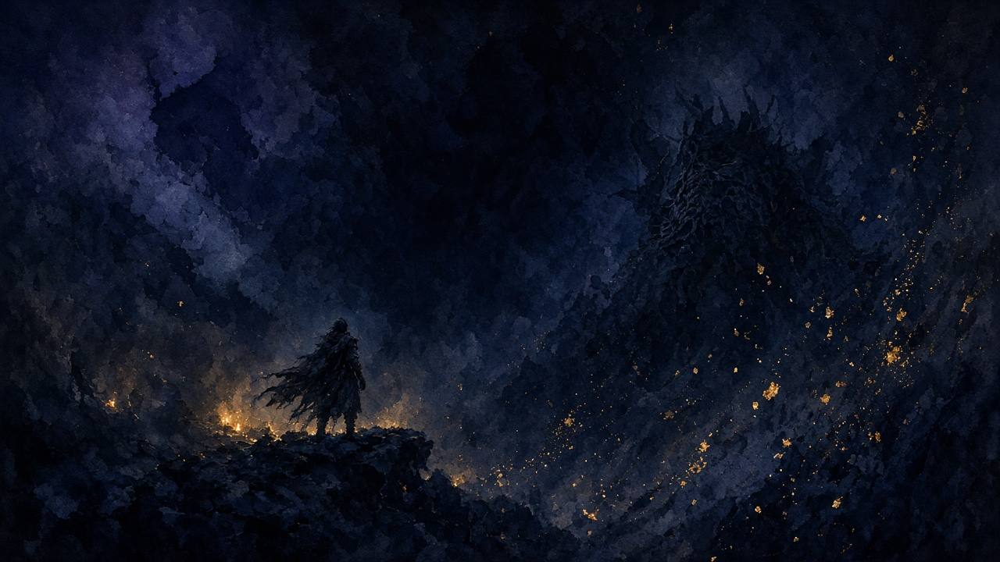

神龍 · 桜竜
源之宮・花見樹／神域 · 單主段 Memory（唔開幻影／真第二段） · 同場白木翁前置四窗＋本戰六窗章節已核；逐招獨立秒等 scrub
樹上翁先處理，再接櫻枝雷——章節窗先睇，逐招獨立窗後補。
白木の翁（前置）
同場進入段，唔當 Illusion／True 第二段。主片 KPiCuu6H8UI（110s）四窗 8–110 已鎖。
神龍／桜竜（本戰）
花見樹大戰。主片 5JFncKGOidQ（182s）六窗 16–182 已鎖；Intro 0–16 有章節但跳過。
鎖窗規則
只 bake 上表十窗；逐招卡 EMPTY。MF2yT6sZwlM／AfbrZRq_bWA／hQ1vQyfths4 只作片源區外連核對，唔嵌卡秒。

FOUNTAINHEAD · OLD DRAGONS
前置・白木の翁
花見樹進場同場段。只 bake KPi 四窗（8–110）；唔當第二 Boss 段。
DIVINE DRAGON · SAKURA
本戰・神龍／桜竜
單主段 Memory。只 bake 5JFnc 六窗（16–182）；逐招卡 EMPTY。
CHAPTERS · VERIFIED
主片章節對照
十窗已核；end 唔超片長（KPi dur 110 · 5JFnc dur 182）。
本戰 · 5JFncKGOidQ
- 16–49／49–70／70–89／89–117 · 戰鬥要點 #1–#4
- 117–149／149–182 · 注目攻擊 #1–#2 · CAP≤182
MOVES · INTRO
前置・招式卡
四窗已核（KPi）。逐招細分 EMPTY（章節窗已有嘅唔重複估秒）。
斬白木翁減血
進場
預兆：白木翁可逐隻削血
先清翁再對本體；總血唔靠黑翁
8–29s（0:08–0:29）· KPiCuu6H8UI @ 0:08 → · Killing Each Dragon… · VERIFIED
閃避樹根三連
進場
預兆：祈禱 tele → 樹根衝刺
連續 dash 唔停
29–54s（0:29–0:54）· KPiCuu6H8UI @ 0:29 → · Dash to Avoid Tree… · VERIFIED
跳樹忍殺
進場
預兆：樹枝可勾、繞背
跳樹 → 忍殺白翁
54–88s（0:54–1:28）· KPiCuu6H8UI @ 0:54 → · Jump from Tree… · VERIFIED
無視黑翁
進場
預兆：黑翁出現
黑翁唔減總血；唔理佢
88–110s（1:28–1:50）· KPiCuu6H8UI @ 1:28 → · Ignore the Black Old Dragon… · VERIFIED · CAP≤110
白木翁／樹根三連（前置）
進場
預兆：祈禱 tele → 衝刺閃；跳樹忍殺
章節窗已覆蓋；獨立逐招秒待 scrub
未鎖獨立示範窗・外連主片
主片外連：KPiCuu6H8UI → · 未窗內 frame scrub
無視黑翁（前置）
進場
預兆：黑翁干擾
黑翁唔減總血
未鎖獨立示範窗・外連主片
主片外連：KPiCuu6H8UI → · 未窗內 frame scrub
MOVES · DIVINE DRAGON
本戰・招式卡
六窗已核（5JFnc）。卡名跟 Tip／Notable 通稱，唔擅自改招名；逐招 EMPTY。
戰鬥要點 #1
P1
預兆：片內 Combat Tip #1
開場節奏參考；逐招睇下面 EMPTY 卡
16–49s（0:16–0:49）· 5JFncKGOidQ @ 0:16 → · YT chapter「Combat Tip #1」· VERIFIED
戰鬥要點 #2
P1
預兆：Combat Tip #2
同片內解說節奏
49–70s（0:49–1:10）· 5JFncKGOidQ @ 0:49 → · YT chapter「Combat Tip #2」· VERIFIED
戰鬥要點 #3
P1
預兆：Combat Tip #3
走位／壓力參考
70–89s（1:10–1:29）· 5JFncKGOidQ @ 1:10 → · YT chapter「Combat Tip #3」· VERIFIED
戰鬥要點 #4
P1–P2
預兆：Combat Tip #4
後段前準備
89–117s（1:29–1:57）· 5JFncKGOidQ @ 1:29 → · YT chapter「Combat Tip #4」· VERIFIED
注目攻擊 #1
P1–P2
預兆：Notable Attack #1
片內標示注目招之一
117–149s（1:57–2:29）· 5JFncKGOidQ @ 1:57 → · YT chapter「Notable Attack #1」· VERIFIED
注目攻擊 #2
P1–P2
預兆：Notable Attack #2
片尾注目段
149–182s（2:29–3:02）· 5JFncKGOidQ @ 2:29 → · YT chapter「Notable Attack #2」· VERIFIED · CAP≤182
劍雨／飛劍
P1
預兆：遠距飛劍／劍雨壓場
走位／彈或躲
未鎖獨立示範窗・外連主片
主片外連：5JFncKGOidQ → · 未窗內 frame scrub
頭部甩擊／近戰連
P1–P2
預兆：貼身甩頭／連段
架／彈再打
未鎖獨立示範窗・外連主片
主片外連：5JFncKGOidQ → · 未窗內 frame scrub
雷相移／接櫻／接雷
P2+
預兆：雷傳導、櫻枝
於佳美／櫻枝接雷
未鎖獨立示範窗・外連主片
主片外連：5JFncKGOidQ → · 未窗內 frame scrub
雷返し／雷反
P2+
預兆：接雷後反打窗
接雷後雷反打頭
未鎖獨立示範窗・外連主片
主片外連：5JFncKGOidQ → · 未窗內 frame scrub
忍殺窗
各階
預兆：姿勢破／跳樹／終忍殺
各階忍殺時機待核
未鎖獨立示範窗・外連主片
主片外連：5JFncKGOidQ → · 未窗內 frame scrub
階段差異（劍雨→雷）
P1→P2+
預兆：後段偏雷與接枝
先睇章節窗再拆招
未鎖獨立示範窗・外連主片
主片外連：5JFncKGOidQ → · 未窗內 frame scrub
危技（若有）
—
預兆：危紅招
無傷片未穩核＝唔估
未鎖獨立示範窗・外連主片
主片外連：5JFncKGOidQ → · 未窗內 frame scrub
VIDEOS
片源總覽
主片全片嵌入作對照。十窗已喺招式卡鎖秒；英／日輔助片只外連核對，唔 bake 卡秒。
前置 · Old Dragons of the Tree（KPiCuu6H8UI）
片長 110s（1:50）· 四窗 8–110
本戰 · Divine Dragon Tips & Movesets（5JFncKGOidQ）
片長 182s（3:02）· 六窗 16–182 · Intro 0–16 跳過
核對用 · 英階段／JP 鏡像（唔 bake 卡秒）
AfbrZRq_bWA dur 162 · hQ1vQyfths4 dur 280 · MF2yT6sZwlM dur 187 — 只外連章節對照。
AfbrZRq_bWA（Easy Kill）→ hQ1vQyfths4（Boss Guide）→ MF2yT6sZwlM（JP 桜竜）→
片源同鎖窗（公開片）
- 5JFncKGOidQ · 本戰主片 · 章節 16–182（dur 182）· 六窗 VERIFIED
- KPiCuu6H8UI · 白木翁前置 · 章節 8–110（dur 110）· 四窗 VERIFIED
- AfbrZRq_bWA · 英階段備選；唔 bake 卡秒（dur 162）
- hQ1vQyfths4 · 英 Boss Guide；唔 bake 卡秒（dur 280）
- MF2yT6sZwlM · JP 鏡像；唔混 bake 秒（dur 187）
招式卡只 bake KPi 四窗＋5JFnc 六窗（共十窗）。逐招 EMPTY 等 frame scrub。
留下意見俾網主
真係會送到招式唔清楚、想加邊個 Boss、有錯漏——丢句說話。留言經 Netlify Forms 直達網主信箱／後台，唔再只係本機保存。
收到，多謝硬核祝福！
你嘅意見已送出俾網主。想再講可以繼續填。